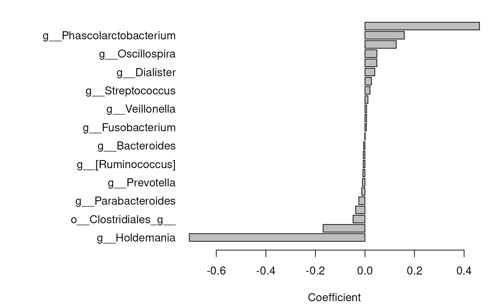
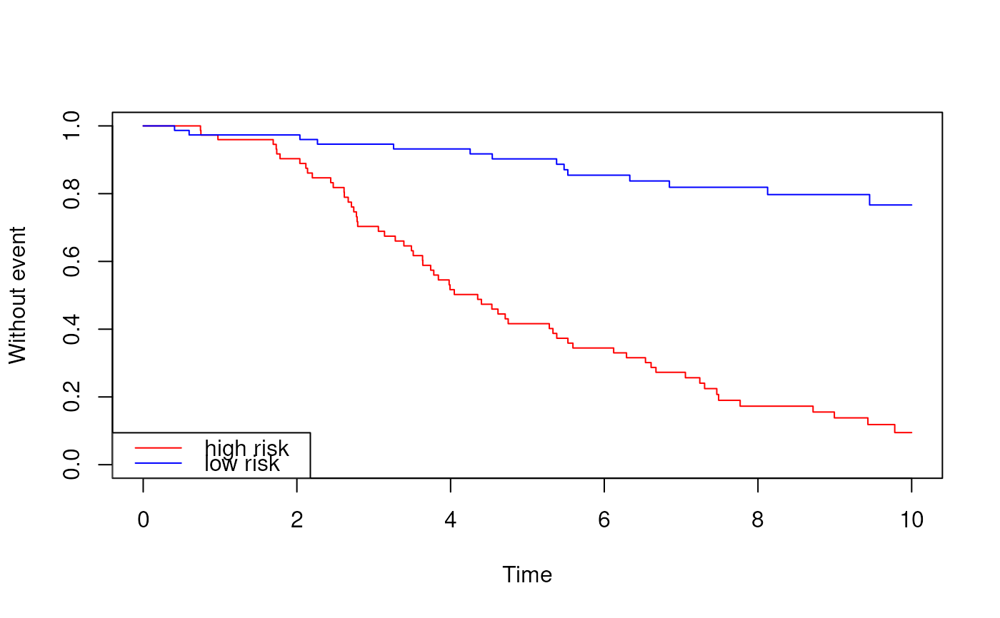

Fit a (penalized) Cox proportional hazards model on microbiome data contained
in a SummarizedExperiment object. Data transformations (e.g. pairwise
log-ratios) should be handled upstream
(e.g. with mia::transformAssay()).
getCox(x, ...)
addCox(x, ...)
# S4 method for class 'SummarizedExperiment'
addCox(
x,
time.col,
event.col,
name = c("cox_coef", "cox_risk_score", "cox"),
...
)
# S4 method for class 'SummarizedExperiment'
getCox(x, time.col, event.col, assay.type = "counts", col.var = NULL, ...)A
SummarizedExperiment
object.
additional arguments.
penalized: Logical. If TRUE, fit penalized Cox
regression using glmnet. If FALSE, fit standard Cox model
using survival::coxph. (Default: TRUE)
lambda: Character or numeric. Penalization parameter
passed to cv.glmnet. Use "lambda.1se",
"lambda.min", or a numeric value. (Default: "lambda.1se")
alpha: Numeric scalar. Elastic net mixing parameter
that controls the balance between Lasso and Ridge regression:
alpha = 1 corresponds to Lasso,
alpha = 0 corresponds to Ridge.
Values between 0 and 1 specify a combination of the two.
(Default: 0.9)
nfolds: Integer scalar. Number of cross-validation
folds for cv.glmnet. (Default: 10)
max.features: Integer scalar. Optional. Maximum
number of features (log-ratios) to include in the model.
(Default: NULL)
coef.threshold: Numeric scalar. Minimum absolute value
for a coefficient to be included in the final model. (Default: 0)
Character scalar. Column name in colData(x)
representing time to event or follow-up time. Must be numeric.
Character scalar. Column name in colData(x)
representing event occurrence. Accepts numeric (0/1) or
logical (TRUE/FALSE) values.
Character vector of length 3. Names for the
coefficients in rowData, the risk scores in colData and the
full results in metadata.
(Default: c("cox_coef", "cox_risk_score", "cox"))
Character scalar. Specifies which assay values are
used in the dissimilarity estimation. (Default: "counts")
Character vector. Optional. Specifies covariate
columns in colData(x) to adjust for in the survival model.
(Default: NULL)
getCox() returns a list with model summaries:
coef: estimated model coefficients
risk_scores: predicted risk scores
c_index: apparent concordance index
c_index_cv_mean: mean cross-validated C-index (if penalized)
c_index_cv_sd: SD of cross-validated C-index (if penalized)
fit: fitted model object (coxph or cv.glmnet)
addCox() returns x with the results added.
getCox() fits a Cox proportional hazards model with the
features of assay.type as predictors. By default
(penalized = TRUE), an elastic net penalized model is fitted with
glmnet::cv.glmnet(), and the penalty is selected by
cross-validation using the concordance index. With
penalized = FALSE, a standard model is fitted with
survival::coxph().
If col.var is specified, the penalized model first fits the
covariates with coxph() and uses their linear predictor as an
offset, so that the features are evaluated on top of the covariates. In the
standard model, the covariates are included as predictors.
The features are used as they are. Transformations, such as pairwise log-ratios, should be applied beforehand.
Coefficients with absolute value not above coef.threshold are
removed, and the remaining coefficients are rescaled so that their absolute
values sum to 2, as in log-contrast models (Pujolassos et al. 2024). The
rescaled coefficients show the direction and relative weight of each
feature, but they are not log hazard ratios. The unscaled coefficients are
available from fit. Risk scores and C-index are calculated from the
fitted model and are not affected by the rescaling.
addCox() adds the coefficients to rowData (NA
for features not in the model), the risk scores to colData, and the
full results to metadata.
Meritxell Pujolassos , Antoni Susín , M.Luz Calle (2024). Microbiome compositional data analysis for survival studies NAR Genomics and Bioinformatics, 6(2), lqae038. doi:10.1093/nargab/lqae038
coda_coxnet,
cv.glmnet
data(crohn_survival)
tse <- crohn_survival
tse <- transformAssay(tse, method = "relabundance")
set.seed(1)
tse <- addCox(
tse, assay.type = "relabundance",
time.col = "event_time", event.col = "event"
)
#> Warning: Starting in glmnet 5.1, the default Cox tie-handling method will change from 'breslow' to 'efron' (matching survival::coxph). To silence this message and lock in the v5.0 default, pass cox.ties = 'breslow' explicitly. To preview the v5.1 behavior, pass cox.ties = 'efron'.
#> Warning: Starting in glmnet 5.1, the default Cox tie-handling method will change from 'breslow' to 'efron' (matching survival::coxph). To silence this message and lock in the v5.0 default, pass cox.ties = 'breslow' explicitly. To preview the v5.1 behavior, pass cox.ties = 'efron'.
#> Warning: Starting in glmnet 5.1, the default Cox tie-handling method will change from 'breslow' to 'efron' (matching survival::coxph). To silence this message and lock in the v5.0 default, pass cox.ties = 'breslow' explicitly. To preview the v5.1 behavior, pass cox.ties = 'efron'.
#> Warning: Starting in glmnet 5.1, the default Cox tie-handling method will change from 'breslow' to 'efron' (matching survival::coxph). To silence this message and lock in the v5.0 default, pass cox.ties = 'breslow' explicitly. To preview the v5.1 behavior, pass cox.ties = 'efron'.
#> Warning: Starting in glmnet 5.1, the default Cox tie-handling method will change from 'breslow' to 'efron' (matching survival::coxph). To silence this message and lock in the v5.0 default, pass cox.ties = 'breslow' explicitly. To preview the v5.1 behavior, pass cox.ties = 'efron'.
#> Warning: Starting in glmnet 5.1, the default Cox tie-handling method will change from 'breslow' to 'efron' (matching survival::coxph). To silence this message and lock in the v5.0 default, pass cox.ties = 'breslow' explicitly. To preview the v5.1 behavior, pass cox.ties = 'efron'.
#> Warning: Starting in glmnet 5.1, the default Cox tie-handling method will change from 'breslow' to 'efron' (matching survival::coxph). To silence this message and lock in the v5.0 default, pass cox.ties = 'breslow' explicitly. To preview the v5.1 behavior, pass cox.ties = 'efron'.
#> Warning: Starting in glmnet 5.1, the default Cox tie-handling method will change from 'breslow' to 'efron' (matching survival::coxph). To silence this message and lock in the v5.0 default, pass cox.ties = 'breslow' explicitly. To preview the v5.1 behavior, pass cox.ties = 'efron'.
#> Warning: Starting in glmnet 5.1, the default Cox tie-handling method will change from 'breslow' to 'efron' (matching survival::coxph). To silence this message and lock in the v5.0 default, pass cox.ties = 'breslow' explicitly. To preview the v5.1 behavior, pass cox.ties = 'efron'.
#> Warning: Starting in glmnet 5.1, the default Cox tie-handling method will change from 'breslow' to 'efron' (matching survival::coxph). To silence this message and lock in the v5.0 default, pass cox.ties = 'breslow' explicitly. To preview the v5.1 behavior, pass cox.ties = 'efron'.
#> Warning: Starting in glmnet 5.1, the default Cox tie-handling method will change from 'breslow' to 'efron' (matching survival::coxph). To silence this message and lock in the v5.0 default, pass cox.ties = 'breslow' explicitly. To preview the v5.1 behavior, pass cox.ties = 'efron'.
# Features in the model, by coefficient, and the concordance index
coefs <- rowData(tse)[["cox_coef"]]
names(coefs) <- rownames(tse)
coefs <- sort(coefs[!is.na(coefs) & coefs != 0])
data.frame(feature = names(coefs), coefficient = unname(coefs))
#> feature coefficient
#> 1 g__Holdemania -0.7088189190
#> 2 g__Lachnospira -0.1690009444
#> 3 o__Clostridiales_g__ -0.0480588927
#> 4 g__Coprococcus -0.0374486847
#> 5 g__Parabacteroides -0.0248156692
#> 6 f__Peptostreptococcaceae_g__ -0.0128949440
#> 7 g__Prevotella -0.0101732968
#> 8 f__Clostridiaceae_g__ -0.0081869065
#> 9 g__[Ruminococcus] -0.0070671475
#> 10 f__Rikenellaceae_g__ -0.0067677792
#> 11 g__Bacteroides -0.0054796815
#> 12 g__Klebsiella 0.0002270162
#> 13 g__Fusobacterium 0.0058101773
#> 14 o__Lactobacillales_g__ 0.0066772429
#> 15 g__Veillonella 0.0067344097
#> 16 g__Blautia 0.0120643543
#> 17 g__Streptococcus 0.0203571296
#> 18 g__Collinsella 0.0261753203
#> 19 g__Dialister 0.0397172210
#> 20 g__Ruminococcus 0.0482339764
#> 21 g__Oscillospira 0.0482367249
#> 22 g__Actinomyces 0.1261562217
#> 23 g__Phascolarctobacterium 0.1587462167
#> 24 g__Neisseria 0.4621511236
metadata(tse)[["cox"]][["c_index"]]
#> [1] 0.7721311
# The coefficients
op <- par(mar = c(4, 14, 1, 1))
barplot(coefs, horiz = TRUE, las = 1, xlab = "Coefficient")

par(op)
# Time to event of samples with risk scores above and below the median;
# the scores come from the data the model was fitted to, so the separation
# is optimistic
df <- data.frame(time = tse$event_time, event = tse$event,
risk = ifelse(tse$cox_risk_score > median(tse$cox_risk_score),
"high", "low"))
km <- survival::survfit(survival::Surv(time, event) ~ risk, data = df)
plot(km, col = c("red", "blue"), xlab = "Time", ylab = "Without event")
legend("bottomleft", legend = c("high risk", "low risk"),
col = c("red", "blue"), lty = 1)
